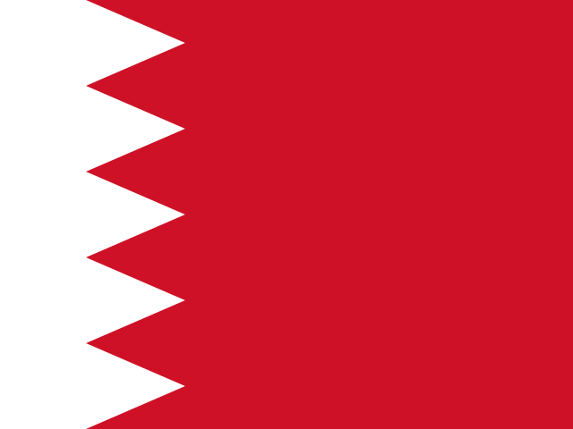

Intro
The 2021 FIA Formula One World Championship marked the 72nd edition of this prestigious motor racing series for Formula One cars. Regarded as the pinnacle of open-wheel racing by the Fédération Internationale de l'Automobile (FIA), it encompassed twenty-two thrilling Grands Prix held across the globe. Drivers and teams vied for the coveted titles of Formula One World Champion Driver and Formula One World Champion Constructor, respectively.\n In a historic turn of events, Max Verstappen of Red Bull Racing-Honda clinched his maiden Drivers' Championship, securing victory in 10 races throughout the season. Verstappen etched his name in the annals of motorsport history as the first Dutch driver, the first Honda-powered victor since Ayrton Senna in 1991, the first Red Bull driver since Sebastian Vettel in 2013, and the inaugural non-Mercedes contender in the turbo-hybrid era to seize the World Championship. \n Honda joined an elite league as the second engine supplier in the turbo-hybrid era to propel a championship-winning car, following in the footsteps of Mercedes. Meanwhile, Lewis Hamilton, the four-time defending and seven-time champion representing Mercedes, settled for the runner-up position. Mercedes, however, retained their stronghold on the Constructors' Championship, clinching the title for the eighth consecutive season.
Regulation Changes
In response to COVID-19 financial strains, the 2021 Formula One season restricted team component modifications, but McLaren received special allowances for engine changes. A token system was introduced for upgrades. Aerodynamic alterations were made, including shifting the car floor inward by 100 millimeters, reducing downforce by 5%. Other changes included removing floor edge slots, narrowing brake duct winglets by 40 millimeters, and reducing diffuser fence width by 50 millimeters. Despite these adjustments, overall downforce increased by 5%. The 'dual-axis steering' (DAS) system, pioneered by Mercedes in 2020, was banned in 2021, while mid-season, revised wing load tests were introduced by the FIA. A new technical directive for pit stop equipment was enforced from the Belgian Grand Prix onward, addressing safety concerns regarding compressed air or nitrogen-filled pit equipment. Compliance was ensured through tolerance parameters for pit stop times and stricter enforcement measures, including intelligent wheel guns.
Calendar
-

Bahrain International Circuit
28 March
-

Imola Circuit
18 April
-

Algarve International Circuit
2 May
-

Circuit de Barcelona-Catalunya
9 May
-

Circuit de Monaco
23 May
-

Baku City Circuit
6 June
-

Circuit Paul Ricard
20 June
-

Red Bull Ring
27 June
-
Red Bull Ring
4 July
-

Silverstone Circuit
18 July
-

Hungaroring
1 August
-

Circuit de Spa-Francorchamps
29 August
-

Circuit Zandvoort
5 September
-
Monza Circuit
12 September
-

Sochi Autodrom
26 September
-

Istanbul Park
10 October
-

Circuit of the Americas
24 Octobe
-

Autódromo Hermanos Rodríguez
7 November
-

Interlagos Circuit
14 November
-

Lusail International Circuit
21 November
-

Jeddah Corniche Circuit
5 December
-

Yas Marina Circuit
12 December